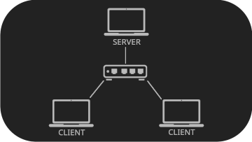

This game was developed using Unity 2022.3.56. In the early stages of development—before server implementation—the game was first designed as a split-screen local multiplayer. However, since the final product is an online multiplayer game, the programming architecture consists of two sides:
The client side handles the core gameplay systems. This includes the implementation of fundamental mechanics like player control and item interaction. Two major components are:
This is the character controlled by the local (client-side) player. The Player GameObject consists of multiple scripts that work together. The Camera, although separate from the Player object, follows it and has its own logic.
Dashing Mechanic (PlayerMovement.cs)
The dash coroutine moves the player rapidly while performing raycast checks to prevent clipping through walls or terrain. If an obstacle is detected, the player will only dash up to the point of collision. During the dash, the player's hurtbox is disabled to prevent damage.
Custom Camera Controller (CameraController.cs)
Instead of using Unity's Cinemachine, this camera system is built from scratch. It provides a modern third-person shooter feel, with adjustable settings (distance, offset, rotation limits, inversion, shoulder swap, etc.) all tweakable via the Unity Inspector.
This is the character controlled by the opponent through the server. Unlike the client-side Player, the Net Player is essentially a "puppet" that acts based on server commands. It is not a separate object but is converted from a regular Player object by the NetController.
Net Player Movement (NETPlayer.cs)
The UpdatePosition() method moves the Net Player to the location received from the server and updates its facing direction. It also calculates movement direction based on position deltas and updates the appropriate animation state.
These are objects players throw at each other. They are divided into three classes: small, medium, and large, each differing in size, damage, and speed. Some items are variants with special effects.
ThrowableObject.cs)The physical setup follows a client-server model, with one server and two clients connected via Ethernet cables through a switch hub.
We developed a basic UDP client-server application in C#, where the server acts as a bridge between the clients by receiving an array of bytes from Client A and forwarding it to Client B, and vice versa. The server performs very minimal data processing.
The reason for the limited processing is that the server was designed primarily for a LAN-based setup, so we decided to keep the implementation simple.
On the client side, we implemented data sending and receiving using a separate thread that leverages basic UDP data exchange functionality from C# System.Net library. We also added a stopwatch to measure the transmission time and make the thread wait accordingly, which helps avoid unnecessary processing and reduces memory usage on the client's machine.
To make each game session feel unique, we used Perlin noise and a simple heightmap mesh generation algorithm to create procedural terrain based on a randomly generated seed.
Initially, we considered using the Marching Cubes algorithm for more advanced terrain destructibility, but we discarded this idea when we switched to an online multiplayer setup due to time constraints.